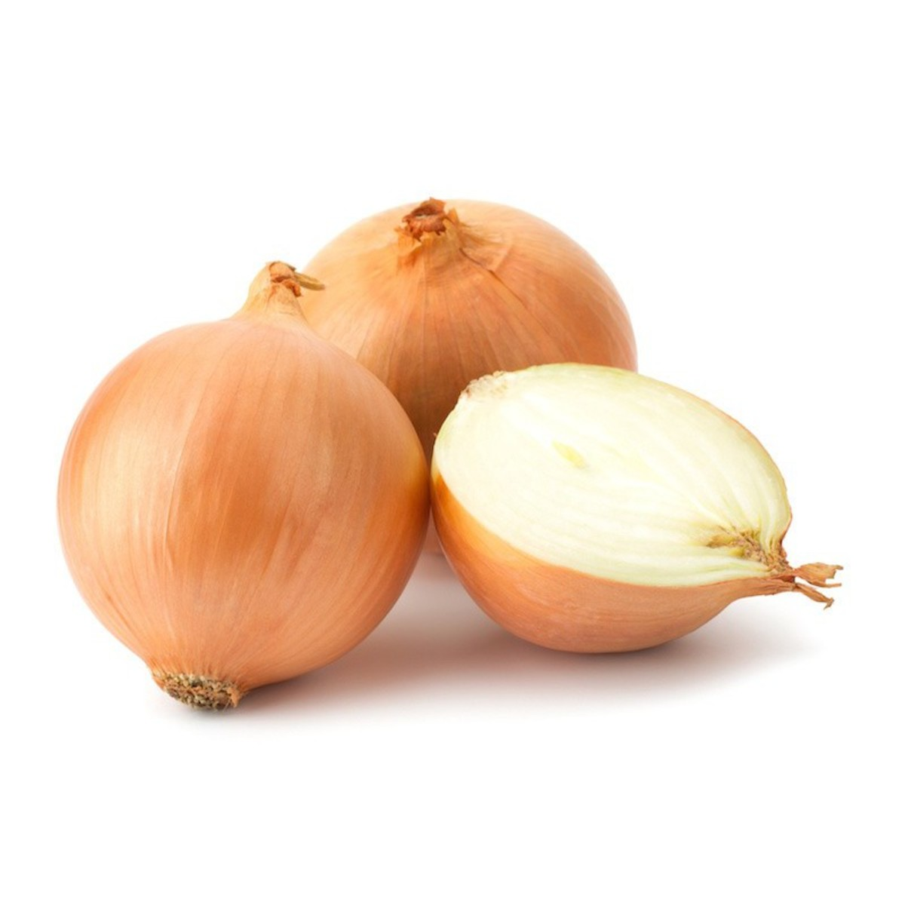

Pasta con salsa de coliflor y pimienta de Jamaica

Esta deliciosa pasta con salsa de coliflor y pimienta de Jamaica, tiene un sabor delicioso y una textura cremosa e irresistible.
Ingredientes
- 4 cucharadas de aceite de oliva virgen extra
- 1 cebolla hermosa
- 4 dientes de ajo
- 500g de coliflor
- 2 tazas de caldo vegetal
- 2 cucharadas de levadura
- 1/2 taza de leche de almendras
- sal
Preparacion
- Picaremos bien fina la cebolla y la sofreiremos en el aceite hasta que este translucida 
- Añadiremos entonces los ajos prensados o picados finos. Sofreiremos medio minutos mas.
- Incorporaremos la coliflor troceada o separada en flores, el caldo y dejaremos cocer hasta que este tierna, seguramente se consumira gran parte del liquido.
- Echaremos la preparacion en el vaso de la Vitamix y añadiremos la leche, la levadura, los granos de pimienta y un poco de sal al gusto. Batiremos hasta conseguir una textura fina.
- Una vez este bien batida, utilizaremos esta salsa para acompañar cualquier plato de pasta.